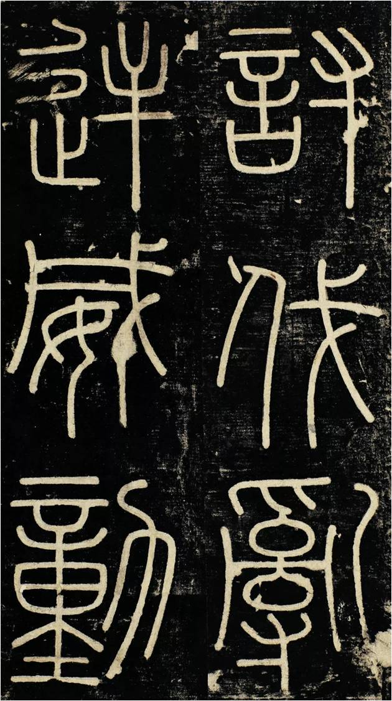
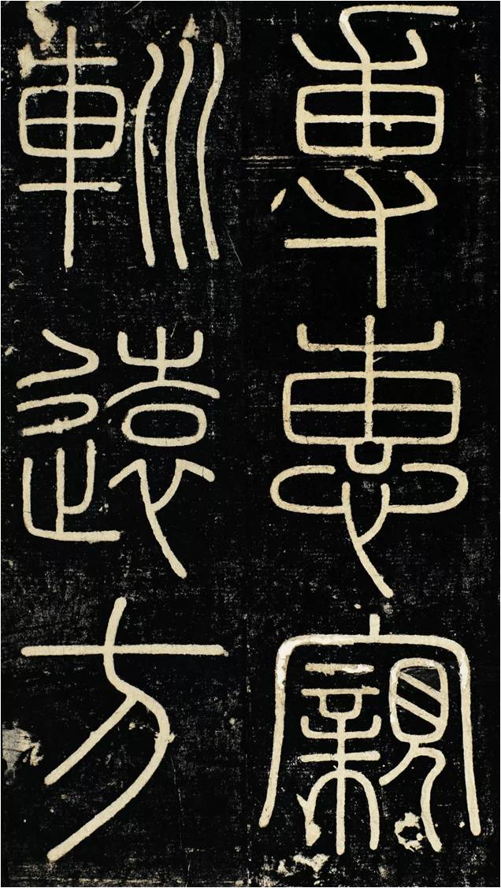

第1/6页
篆书:分为大篆和小篆。 大篆是秦代以前通用的一种字体， 包括甲骨文、金文、石鼓文等，字形变化丰富，笔画雄强而凝重。 小篆秦始皇统一六国后，由李斯在秦国原有篆书基础上整理简化而成的字体， 其字体微狭长，字形整齐优美，笔画圆匀秀美。
 隶书:起源于秦朝，在汉代达到鼎盛。 它是将小篆中的象形部分剔除，只保留大体结构而形成的。 汉代隶书字形为方形，笔画平直，偏旁简单，结构清楚。 其典型笔法是有波势，用挑法， 即“蚕头凤尾”。
草书是汉字的一种字体，有广狭二义。广义的，不论年代，凡写的潦草的字都算作为草书。 狭义的，即作为一种特定的字体,形成于汉代,是为了书写简便在隶书基础上演变来的。 大约从东晋时代开始，为了跟当时的新体草书相区别。把汉代的草书称作章草。 新体草书相对而言称作今草，其又分大草(也称狂草)和小草，在狂乱中觉得优美。 正如李志敏说:"临于池，酌于理， 师于物，得于心，悟于象，然后始入草书妙境。” 草书由于字形太简单，彼此容易混淆，所以不能像隶书取代篆文那样， 取代隶书而成为主要的字体。其典型笔法是有波势，用挑法， 即“蚕头凤尾”。
行书:是一种书法统称，分为行楷和行草两种。它在楷书的基础上发展起源的， 是介于楷书、草书之间的一种字体，是为了弥补楷书的书写速度太慢和草书的 难以辨认而产生的。“行”是“行走”的意思，因此它不像草书那样潦草，也不像 楷书那样端正。实质上它是楷书的草化或草书的楷化。
楷法多于草法的叫“行楷”，草法多于楷法的叫“行草”。行书实用性和艺术性皆高 而楷书是文字符号，实用性高且见功夫；相比较而言，草书则是艺术性高，但是 实用性显得相对不足王羲之一生最突出的成就即书法艺术，无论在生前还是死后， 都受到人们的尊崇，有“书圣”之誉。王羲之不仅能精通书法各体，集当时书法之 大成，更在于其能自成一家，开创了具有独特风格的王派书法。王羲之所写的书 法，楷书以《黄庭经》《乐毅论》等最有名，行书以《快雪时晴帖》《丧乱帖》 最出色，草书则以《十七帖》最传神，代表作《兰亭集序》更是被誉为“天下第一行书”。

中国汉字是劳动人民创造的，开始以图画记事，经过几千年的发展，演变成了当今的 文字， 又因祖先发明了用毛笔书写，便产生了书法，古往今来，均以毛笔书写汉字为 主，至于其他书写形式， 如硬笔、指书等，其书写规律与毛笔字相比，并非迥然不同 ，而是基本相通。从广义讲，书法是指语言符号的书写法则。